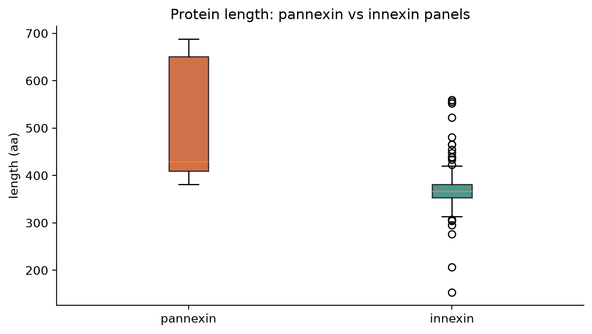
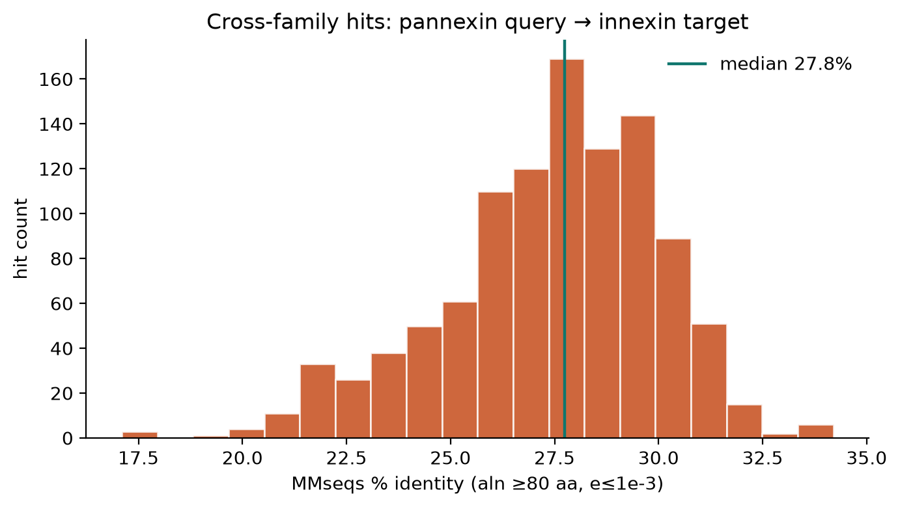
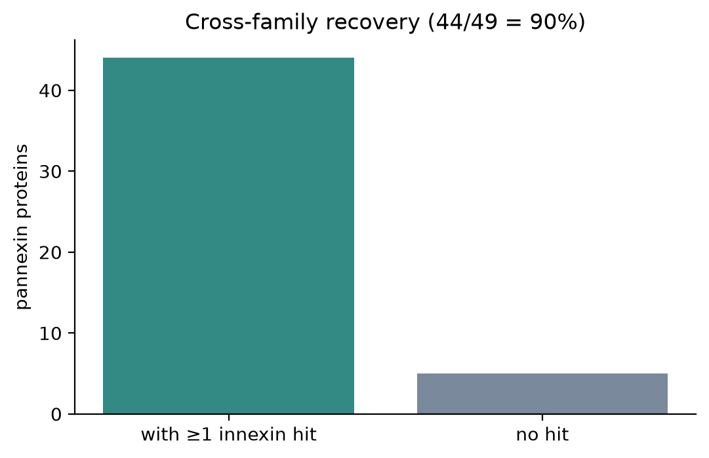

Pannexin × innexin
Same comparison style as the innexin × connexin page, but only against innexins — the family pannexins are expected to resemble. Connexins are intentionally not in this contrast.
Finding. Most pannexin proteins (44/49) hit at least one innexin at e≤1e-3 and ≥80 aa (median %id 27.8). That is the opposite pattern from innexin×connexin on the parent site (no cross-family hits at the same thresholds).

Length distributions for the two panels.

3-mer composition SVD. Overlap is expected if pannexins are innexin-related sequences; separation would argue against detectable relatedness in this feature space.

MMseqs % identity for pannexin→innexin hits (aln ≥80 aa, e≤1e-3).

How many pannexin proteins recover at least one innexin hit under the same thresholds used for innexin×connexin (where cross hits were essentially zero).
Literature treats pannexins as chordate/vertebrate relatives of innexins that no longer dock into gap junctions. This page only tests sequence detectability against the innexin panel; it does not re-derive the chordate bottleneck story from these trees alone.